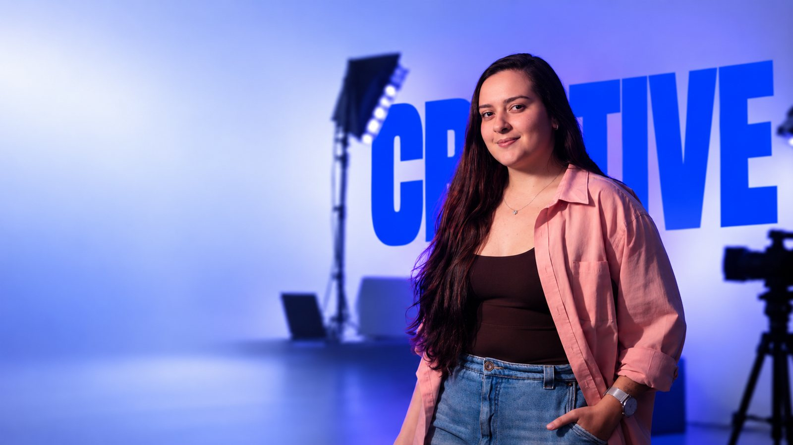
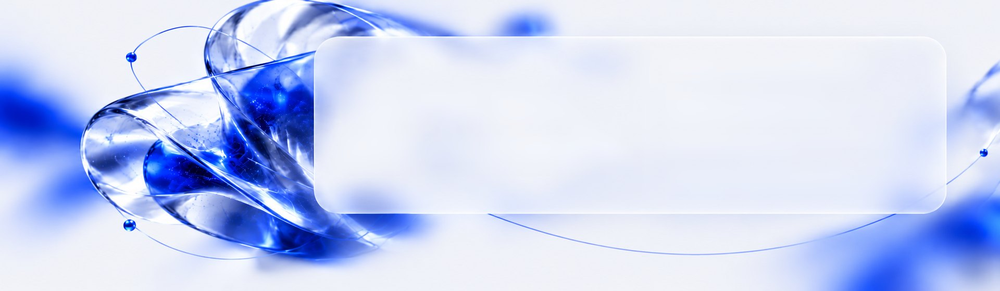
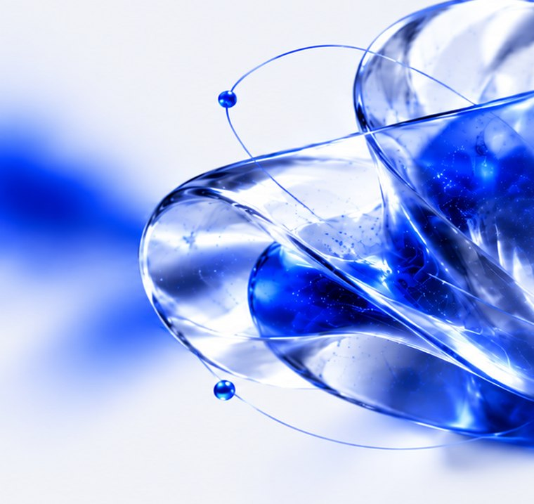
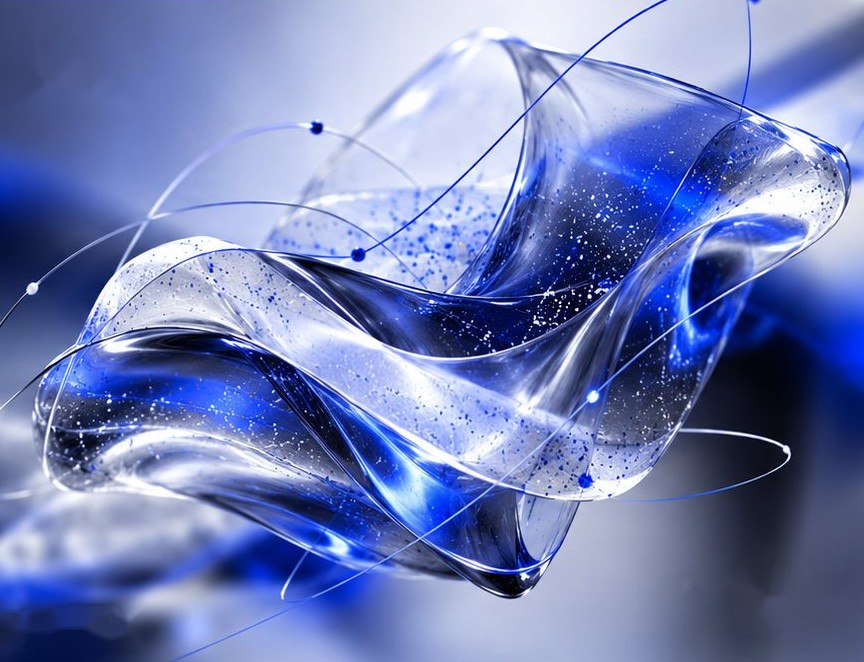
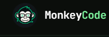

CRIAÇÃO, ESTRATÉGIAE GESTÃO DE PROJETOS.
Estratégia, conteúdo e processos para transformar ideias em marcas, projetos e resultados.
→Ver projetos


Marketing,além da execução.
Atuo com marketing desde 2019, conectando
estratégia, conteúdo, branding e negócios.
Antes de executar, busco entender
contexto, comportamento e posicionamento
para construir ideias com mais intenção.
Uso tecnologia e inteligência artificial como apoio à
pesquisa, análise e criação.
Mais do que conteúdo, busco construir
marcas, processos e ideias que permaneçam.
CRIATIVA,mas com método.
- 01EstratégiaEntender antes de executar.
- 02ProjetosTransformar estratégia em plano e execução.
- 03CriaçãoCriar ideias que comunicam e geram atenção.
- 04PerformanceMedir, aprender e otimizar.
- Briefing
- Pesquisa
- Estratégia
- Produção
- Aprovação
- Publicação
- Análise
- Otimização
- Briefing
- Pesquisa
- Estratégia
- Produção
- Aprovação
- Publicação
- Análise
- Otimização

AI ×Creativity
IA faz parte do meu processo.
Não substitui meu pensamento.
Uso inteligência artificial para explorar possibilidades, otimizar processos e potencializar ideias. A estratégia, o olhar e a direção criativa continuam sendo meus.
→Conheçameu processo
Ferramentas que fazem parte do meu processo

IMPACTO EMNÚMEROS.
Por onde passei,o que fiz acontecer.
Experiências que me deram repertório para unir marketing, processos e resultados na prática.
- 01Mansão Green↗Social Media Pleno e Estrategista Digital
- 02Grupo Barra Grande↗Head de Marketing
- 03Agência Ápeiron↗Fundadora / CEO
- 04Casa Esportiva↗Marketing
- 05ADM.JR↗Projetos & Liderança
Tem uma ideiaque precisasair do papel?
Transformo estratégia, criatividade e processo em projetos visuais com direção e intenção.